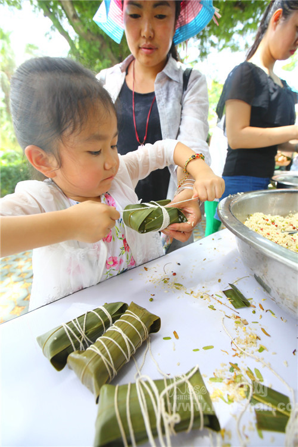

日期 | Date

青石花巷粽香起，又是一年端午时。除了吃粽子、划龙舟外，端午节也是一个全民防疫祛病、避瘟驱毒、祈求健康吉祥的节日。当天，除了端午祈福法会外，游人还可在南山景区体验雄黄画额、包粽子、洗龙水、朝圣祈福等活动。
 雄黄画额 乐享端午
雄黄画额 乐享端午
.jpg)
端午节，小朋友在南山景区体验雄黄画额
.jpg)
端午节，游人在南山景区体验雄黄画额
端午节这天，人们会把雄黄酒涂在小孩儿的耳、鼻、额头、手、足等处，或是画上一个王字，一借雄黄以驱毒，二借猛虎以镇邪。当天，不少家长带着孩子在景区免费体验“画额”，重温端午民俗。“以前还从来没搞过，第一次弄觉得还挺有趣的。”一位家长笑着说。有的小朋友还主动向工作人员询问端午节雄黄画额的含义。
.jpg)
端午节，小朋友在南山景区体验雄黄画额
全民“粽”动员 亲手包粽子
.jpg)
端午节，游人在南山景区动手包粽子
.jpg)
端午节，游人在南山景区动手包粽子
除了雄黄画额，南山缘起楼包粽子活动的现场更是热闹。现场，大家互相学习、尝试，体验用椰子叶包海南粽子，一派其乐融融的景象。不少岛外游客都是第一次见到这种包法，表示十分新奇，每个人都跃跃欲试。包粽子是人们庆端午活动中不可或缺的一项内容，现在会包粽子的人越来越少，能够在旅途中体验包粽子不仅可以增添旅途的乐趣，也是传统民俗文化的传承。
端午节，小朋友在南山景区学习包粽子
“码”上送素粽 南山过端午
.jpg)
端午节，游人在南山景区免费领取素粽
.jpg)
端午节，游人在南山景区扫码参与活动
当天，在景区游客中心，所有游客均可免费参与微信互动活动领取素粽，弥补出门在外不能吃到粽子的遗憾。现场参加免费抽奖活动，还可以收获一份意外的端午节礼物。在活动现场，工作人员还不时提醒游客将剥下来的粽叶丢进垃圾箱，做到文明旅游。
.jpg)
端午节，游人在南山景区参与扫码互动活动
端午法会 祈福纳祥
.jpg)
南山寺端午祈福法会现场
.jpg)
端午节，南山寺智法法师为游人派发素粽
当天上午，南山寺全体僧众在寺院大殿和海上观音圆通宝殿分别举行端午节祈福法会。在法会中，南山寺智法法师向游人洒净祈福，并派发吉祥素粽，分享端午民俗的喜悦。在景区海上观音、南山寺、金玉观音、密法归华堂、三十三观音堂、天竺圣迹佛陀馆等处，都可以看见游人信众祈福的身影。因海南有洗龙水祈福的习俗，在南山景区海边也可看到不少游客戏水玩耍，乐享端午假期。
端午祈福法会上，智法法师为游人洒净祈福
.jpg)
端午节，游人信众在南山景区参观游览
端午节当天，南山景区迎来一股客流小高峰，其中海南本省游客较平日明显增多。
.jpg)
端午节，游人在南山景区烧香祈福
 在线客服
在线客服
 快速导航栏
南山门票套餐指南
南山客房预订指南
婚纱摄影
快速导航栏
南山门票套餐指南
南山客房预订指南
婚纱摄影